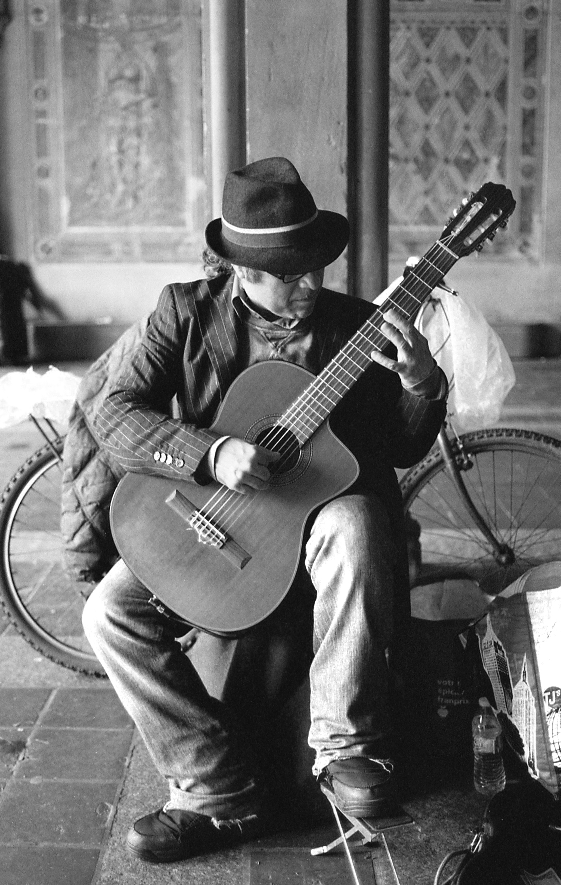

"The Guitarist"
35mm Photography // 2018 // New York City, New York
Back in 2018 I was supposed to go on a trip to New York with a girl I'd been dating for a long time. I was originally going to tour Parsons as I'd just started considering art school at the time, but it became more of just a trip for me to show her what life was like in a city that big. She ended up having to fly home the second day, leaving me alone in the city for another week. It was probably one of the best weeks of my life. Every morning I'd get up with the sun, photograph people on the street, and go to bed long after the sun decided to. I met this man playing guitar under a bridge in Central Park who was very sweet, and thankfully keen to have his photo taken. Fourteen to sixteen hours of uninterupted shooting everyday will teach you a thing or two about street photography, namely how easy it is to approach people.